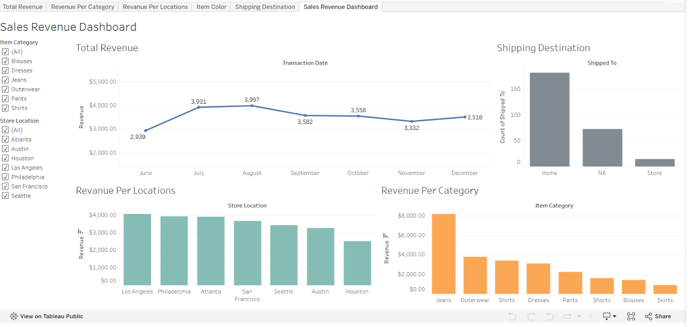

My Projects

Dashboard Sales Revenue
Membuat dashboard interaktif untuk menampilkan data penjualan dan revenue menggunakan Tableau.
Membangun Database Es Teh Manis Solo
Membangun database untuk bisnis Es Teh Manis Solo menggunakan Oracle SQL dan melakukan analisis data dan juga membangun ERD data.

Struktur Data - Quad Tree
Implementasi Quad Tree untuk pencarian lokasi cabang ATM berdasarkan jarak.